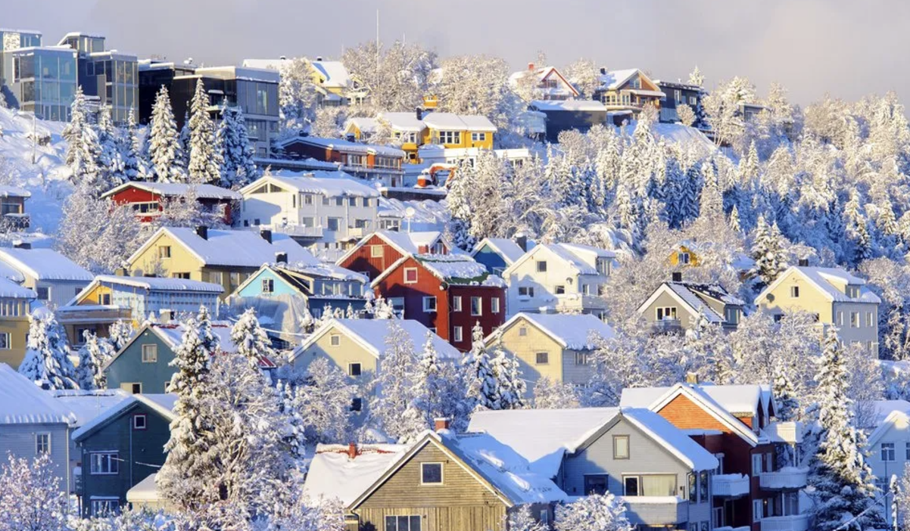

1. 노르웨이에 대하여
수려한 자연 경관이 일품이기 때문에 자연의 숨결을 온 몸으로 느낄 수 있는 나라, 노르웨이. 물가가 비싸 돈이 매우 많이 든다고 한다 (학생 할인 제도가 잘 되어 있으므로 국제 학생증을 만들어가면 많은 부분에서 할인받을 수 있다.) 노르웨이는 세로로 길고 크기 때문에 도시 간 이동은 주로 비행기를 탄다고 한다. 특이한 이력이 있는데, 바로 역대 동계올림픽 최다 우승국이라는 점이다. 몇 가지 도시를 소개하겠다. 스타방에르라는 도시는 여행의 시작지로 알려진 도시이다. 보스라는 도시는 설산과 호수가 있는 작은 소도시라 조용히 당일치기 하기 좋다. 다른 도시들은 아래서 소개하겠다.
2. 노르웨이 기후
겨울의 노르웨이는 확실히 다른 나라보다는 춥지만, 영하 10도 이하로 내려가는 경우는 없다고 한다. 특이점은 겨울의 노르웨이는 해가 매우 빨리 진다는 점인데, 빠르면 3시에도 해가 진다고 한다. 노르웨이는 1년 내내 늦가을같은 기후를 띄고 있어서 시원하다. 스발바르 제도는 노르웨이에서 가장 추운 곳인데, 이곳에서 오로라를 볼 수 있다고 한다.
3. 노르웨이에서 가봐야하는 곳들
1. 오슬로 스피커슈카
노르웨이 수도의 크리스마스 박람회 중 하나인 스피커슈파는 한 달 이상 지속된다. 오슬로의 주요 번화가인 칼 요한스 게이트에 있는 스피커슈파 스케이트 링크에서 열린다. 이곳은 왕궁에서 매우 가까운 거리에 위치한다. 크리스마스 마켓에는 유쾌한 포장 마차, 낭만적인 아이스 스케이트장, 새로운 관람차를 비롯해 즐길 거리로 가득하다.
2. 트론헤임
트론헤임의 크리스마스 마켓에서는 도자기 그릇이나 독특한 잼 등 자신의 제품 뒤에 숨겨진 이야기를 들려주고 싶어하는 농부와 공예가를 가까이서 만날 수 있다. 대형 텐트는 카페와 실내 무대 역할을 하며 노점에서는 현지 음식을 판매하고, 어린이를 위한 연극 공연이 펼쳐진다. 트론헤임의 무대 토브씬(Torvscenen) 에서는 구세군의 자선 활동을 위해 콘서트를 하는 아티스트와 밴드의 공연이 끊임없이 이어진다.
3. 뢰로스
크리스마스 휴가 분위기에 빠져들고 싶다면 디즈니 애니메이션 겨울왕국에 영감을 준 도시인 뢰로스(Røros)가 제격이다. 오래된 목조 주택, 수많은 공예품 상점, 아늑한 카페가 있는 뢰로스는 거리에 눈만 내려도 크리스마스 느낌이 물씬 풍긴다. 장밋빛 뺨을 가진 아이들과 니트 장갑, 유리 제품, 절인 소시지, 훈제 연어, 목공예품 등 현지에서 생산된 제품들이 크리스마스 마켓이 열리는 기간 동안 거리를 가득 메운다. 양 가죽 담요 아래서 말이 끄는 썰매를 타거나 실제 순록을 가까이서 볼 수 있다. 이 중 아이들에게 가장 인기가 좋은 것은 단연 산타 방문이다.
4. 노르웨이에 음식을 즐겨요
1. 루테피스크
악명 높은 전통 요리에 관심 있는 사람 ? 노르웨이 조상들의 생존을 위해 필수적이었던 이 요리는 숙성된 생선을 건조하거나 소금에 절여서 잿물에 담가두면서 건조시키는 요리이다. 생선에 특유의 젤라틴 같은 질감이 부여되는데... 그 식감과 맛, 향은 호불호를 강하게 탄다고 한다. 톡 쏘는 향, 독특한 식감이 독보적인 루테피스크는 삶은 감자나 완두콩 퓨레, 녹인 버터 등과 함께 먹는다
2. 뢰메그뢰트

샤워크림, 밀가루, 우유, 버터로 만든 진하고 크리미한 죽인 뢰메그뢰트는 긴 역사를 지닌 노르웨이 대표적인 가정식이다. 계피나 설탕 등을 뿌려서 먹으며 달콤하고 크리미한 죽과 대비되는 짠 맛이 나는 절인 고기를 함께 먹기도 한다. 노르웨이에서 유제품이 가지는 의미가 반영된 요리이며 추운 날씨에 포근한 느낌을 주는 요리이다.
3. 파리콜
이 요리는 우리나라에서는 익숙하지 않은 양고기를 활용한다. 큰 냄비에 양 뼈를 넣고 양고기와 양배추, 통후추, 밀가루를 넣고 푹 끓인다. 이 요리는 노르웨이 사람들에게 큰 의미를 가지는 요리인데, 매년 9월 마지막 목요일은 파리콜 기념일로 지정해 축제를 연다. 확실히 쌀쌀한 기후라 따뜻한 음식을 많이 접할 수 있다.